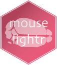
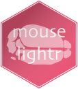

The goal of mouselightr is to provide R client utilities for interacting with the MouseLight at Janelia Research Campus, which has successfully acquired and registered almost ~1,000 neurons from the mouse into a standard, annotated template space. MouseLight investigators have acquired sub-micron single neuron reconstructions from two-photon microscopy datasets of whole brainsusing modified tissue clearing techniques, and have generated a template brain with defined sub-volumes. Using this R package in concert with the natverse ecosystem of neuroanatomy tools is highly recommended.
Installation
Firstly, you will need R, R Studio and X Quartz as well as nat and its dependencies. For detailed installation instructions for all this, see here. It should not take too long at all. Then:
# install
if (!require("devtools")) install.packages("devtools")
devtools::install_github("natverse/mouselightr")
# use
library(mouselightr)Done!
Key Functions
Now we can have a look at what is available, here are some of the key functions. Their help details examples of their use. You can summon the help in RStudio using ? followed by the function name.
# And how can I download and read neurons?
?mouselight_read_neurons()
# Get useful information on the neurons available
?mouselight_neuron_info()
# Get a 3D neuropil-subdivided brain model
?mouselight_read_brain # Get 3D neuropil-subdivided brain models for those brainspacesExample
Let’s also have a look at an example pulling neurons and brain meshes from the MouseLight neuron browser. Excitingly, all the data is in a single standard template space!

## First we can quickly just plot the outer mesh for the brain
outline = mouselight_read_brain(type = "outline")
plot3d(outline, col = "pink", alpha = 0.3)
## This is cool, but maybe what we really want are its sub-divisions.
mousebrain = mouselight_read_brain(type = "brain_areas")
clear3d()
plot3d(mousebrain)
### This takes a long time the first time you call this function per session
### .obj files are saved in a temporary folders
### You could save this brain locally, to use quickly in future.
#### save(mousebrain,"YOUR_PATH/mouselight_brain.rda")
## What brain regions are on offer?
print(mousebrain$neuropil_full_names)
## Or if we want more information, we can get it like this:
mbr = mouselight_brain_region_info()
View(mouselight_brain_region_info)
## Perhaps we want to plot just the amygdala?
### To do this we can do
amygdala.codes = mousebrain$RegionList[grepl("amygdala",mousebrain$neuropil_full_names,
ignore.case = TRUE)]
plot3d(outline, col = "pink", alpha = 0.1)
plot3d(subset(mousebrain, amygdala.codes), alpha = 0.5)
## So now we want some neurons
## What neurons data is available?
ndf=mouselight_neuron_info()
#### How many tracings per neurons?
table(table(ndf$neuron.id))
#### This is because many 'neurons' have a separate axon and dendrite skeleton
## We can download all of these neurons, and their meta-data
### Typically two tracings, and axon and a dendrite, per neuron
mlns = mouselight_read_neurons(ndf$tracing.id, meta = TRUE)
## Let's read in all the amygdalal neurons
### Since each
in.amyg = mouselight_nodes_in_region(mlns, brain.areas = amygdala.codes, labels = NULL)
amyg.ids = names(in.amyg)[in.amyg>0]
amyg.neurons = mlns[amyg.ids]
## And plot!
plot3d(amyg.neurons)
### Quite wide-ranging!

Acknowledging the data and tools
Any work that uses data from this package should cite
Winnubst, Johan, Erhan Bas, Tiago A. Ferreira, Zhuhao Wu, Michael N. Economo, Patrick Edson, Ben J. Arthur, et al. 2019. Reconstruction of 1,000 Projection Neurons Reveals New Cell Types and Organization of Long-Range Connectivity in the Mouse Brain. bioRxiv. https://doi.org/10.1101/537233.
Economo, Michael N., Nathan G. Clack, Luke D. Lavis, Charles R. Gerfen, Karel Svoboda, Eugene W. Myers, and Jayaram Chandrashekar. 2016. A Platform for Brain-Wide Imaging and Reconstruction of Individual Neurons. eLife 5 (January): e10566.
This package was created by Alexander Shakeel Bates and Dr. Gregory Jefferis. You can cite this package as:
citation(package = "mouselightr")Bates AS, Jefferis GSXE (2019). mouselightr: R client utilities for interacting with the MouseLight project. R package version 0.1.0. https://github.com/natverse/mouselightr